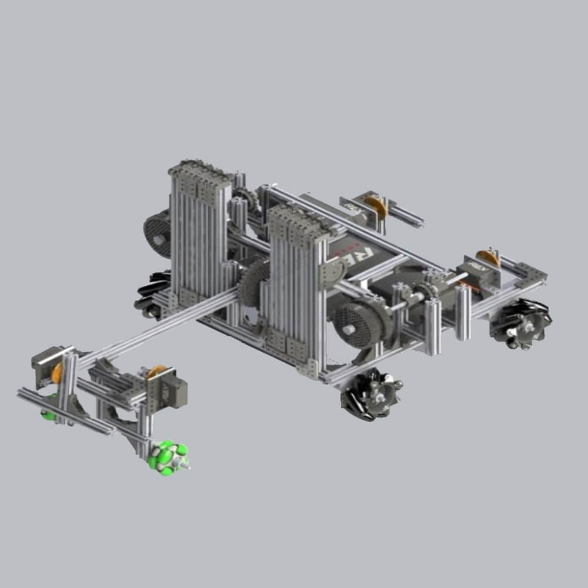

What is it about?

This is the robot that holds a special place in my heart among all the ones I have built. While it may not have been the most technically advanced in terms of engineering, it yielded the best results due to the great synergy between the construction and programming teams. Despite not having the most sophisticated machine compared to other teams, its performance was exceptional.
This robot had the following features:
- A mecanum wheel chassis that allowed it to move in all directions (forward, backward, left, right, rotations, diagonals, turns on different axes, etc.).
- A library that used trigonometric calculations to keep the robot perfectly straight regardless of the displacement of its center of mass ("LibTMOA," which stands for Trigonometric Mecanum Omnidriving Algorithm).
- A long arm that started inside the robot and unfolded to reach remote parts of the scoring area. This arm had a claw at the end to grab the game elements, which were giant LEGO blocks.
- A lift mechanism attached to the arm to build towers with the giant LEGO blocks, which was the objective of the game.
- A system of two metal extrusions to move the scoring platform across the playing field, as it provided extra points.
- A low height to easily pass under a couple of crossbars without any issue.
- A wide variety of sensors to determine the robot's position, the angle of the arm, and when peripheral elements of the field or game elements are touched.
This robot became the national champion and earned 3 awards to represent Mexico in the world championship, but unfortunately, it was canceled due to the pandemic. Regardless of this, I want to emphasize that the creation of this robot was more important than its outstanding performance. During these months, I learned 3D design, produced renderings of the designs, improved my manufacturing skills, and even delved into programming. But above all, I learned project management, leadership, and teamwork.